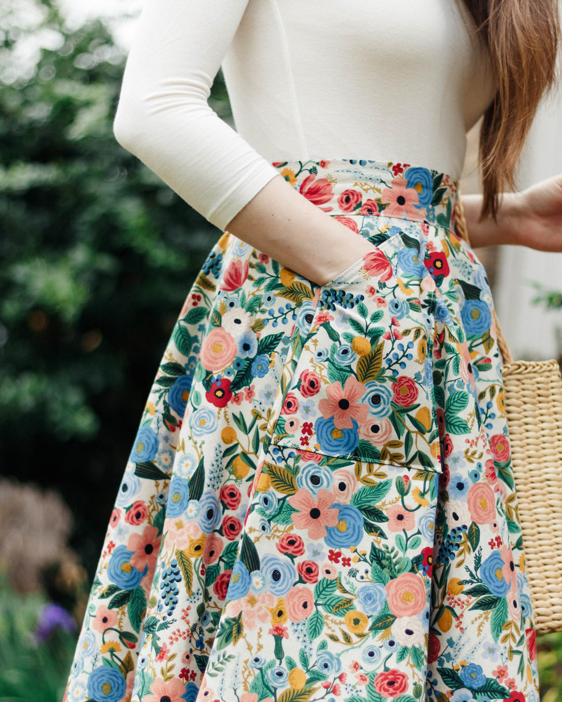
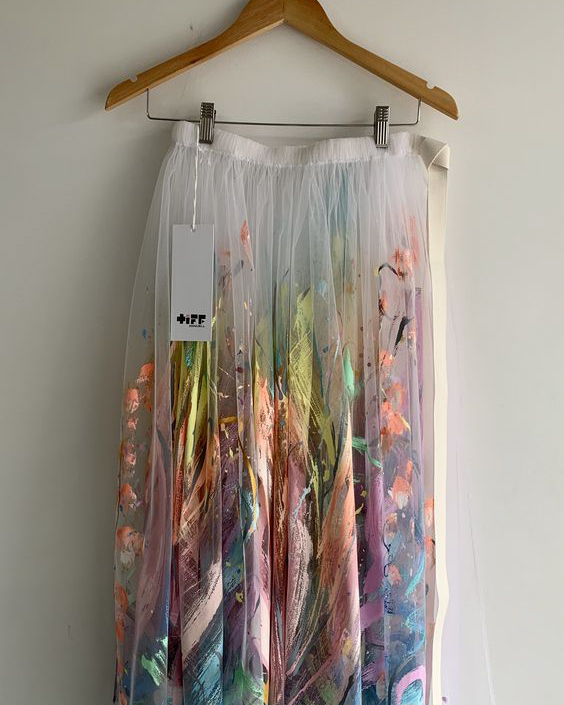
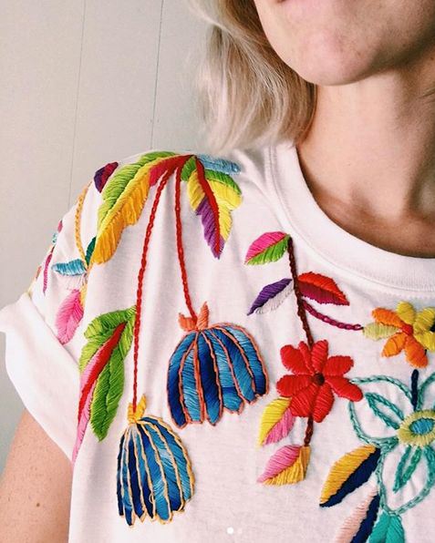

Handmade

Handmade skirt by Lauren Johnson, owner of BouquetClothing on Etsy

Painted skirt made by artist Tiff Manuell

Embroided tee by Tessa Perlow, owner of TessaPerlowInc on Etsy
about
Most often we picture clothing on a mannequin, runway, or in a catalog when looking for
outfits to inspire us. Either way, clothing is a commodity someone else has designed and we purchase. However, only
recently has the process of making clothes become a commercialized process. For years, women constructed their own
apparel out of necessity, and modern times have popularized this practice as a hobby. Many have taken to Etsy
for example as a means to sell their sewn, embroidered, or painted pieces. So, next time you are looking for a new
outfit, source out a local crafter for a more unique piece, or rather, take up the new skill yourself!